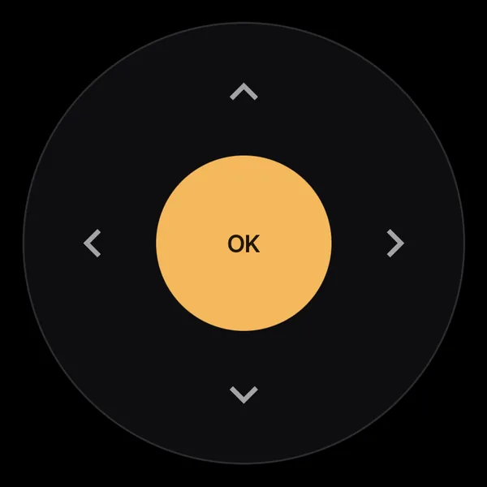
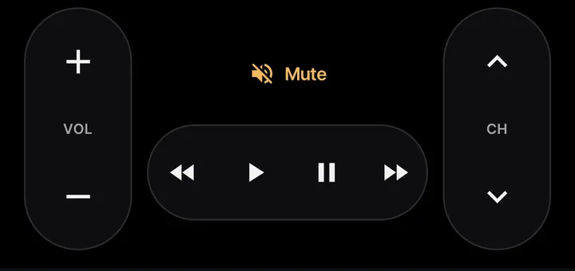

Your TV,
from the sofa.
A quick, ad-free phone remote for Sony Bravia TVs. It talks to the TV over your home network only, and nothing leaves the house.
- Coming to Google Play
- No ads
- No account
- Home network only
- Android 8.0+

A remote that keeps up with your thumb.
Everything the plastic remote does, without aiming it at the TV, plus the bits it never could.
Fast keys
The D-pad, volume and channels go over the Android TV Remote protocol, after a second, one-time pairing.
Swipe the card to change channel
The card shows what’s on and the volume. Swipe it for the next channel, and jump back to the previous one with a tap. When the commercials start, tap Ad break: the sound goes off and comes back by itself.

Touchpad mode
Swipe to move, tap for OK. Rest your finger after a swipe and it keeps moving.
Type and talk
Type or dictate into the TV’s search, or just say it: “kanava 3”, “volume 20”. Voice commands in Finnish and English. The whole app is in both, too, and you can pick either, whatever your phone’s language.
Every input, app and channel
Inputs and installed apps with their icons, and the full channel list. Long-press an app to pin it under the remote as a one-tap button.
Your phone’s own buttons
The phone’s volume buttons change the TV volume while the app is open. Pinned apps also show up when you long-press the Sohva icon on your home screen.

A weekday evening, set up once.
Scenes switch channels at the right times while the TV is on; the sleep timer and wake-up handle both ends of the day, even with the app closed. A scheduled scene never turns the TV on by itself. If nobody is watching at 20.30, the TV stays off.
Wake-up turns the TV on at a set time, to the channel and volume you picked, even with the app closed. The coffee is still your job.
Most of the time, you won’t even open it.
Quick Settings tiles
Power, mute, guide and your first scene, from the notification shade.
Home-screen widget
Volume, channel and mute, right on the home screen.
Launcher shortcuts
Long-press the app icon to open a pinned TV app directly.
Mute during calls
The TV goes quiet when the phone rings and comes back after.
Sleep timer and wake-up
The sound fades over a minute before the TV turns off, and the volume is back next time.
On a tablet
Turn the tablet on its side and the inputs, channels, timers and scenes stay open beside the remote. Held upright, they sit between the channel card and the remote. The buttons keep their phone size, so your thumb still finds them.
A remote, and nothing else.
Sohva Remote has no ads, no account and no servers of its own. The phone talks to the TV, and that’s it.
No ads, no paywall
Every feature is there from the first launch.
No account, no cloud
The phone talks to the TV on your network. Nothing goes to the internet.
No analytics
The app collects no data about you or what you watch.
Pair once
Type the PIN the TV shows. If the TV gets a new address, the app finds it again.
The details are in the privacy policy (suomeksi).
Get Sohva Remote.
It’s coming to Google Play, for Android 8.0 or newer. Free, with no ads. Phone and TV need to be on the same home network.
Allow remote control on the TV
Settings › Network › Home network setup › IP control: set Authentication to “Normal and Pre-Shared Key” and Remote start to On.
Install the app
Install Sohva Remote from Google Play once it’s out.
Pair with the PIN
Open the app on the same Wi-Fi. It finds the TV; type the PIN the TV shows.
Questions.
The short answers to what people ask first.
Which TVs does it work with?
It’s built and tested on a Sony KD-65XF9005 with Android TV. Other Bravia TVs with IP control should work too.
What do I need to set on the TV?
Open Settings › Network › Home network setup › IP control. Set Authentication to “Normal and Pre-Shared Key” and Remote start to On. Then open the app and type the PIN the TV shows.
Is it free?
Yes. There are no ads and no paywall: every feature is there from the first launch.
Does it work away from home?
No. The phone talks to the TV directly over your home network, so both need to be on the same Wi-Fi. Nothing goes through the internet.
Does it work on a tablet?
Yes. On a tablet on its side, the inputs, channels, timers and scenes stay open beside the remote; held upright, they sit between the channel card and the remote. The remote keeps the size it has on a phone.
When will it be on Google Play?
It’s on its way. It will install on Android 8.0 or newer.
Is it made by Sony?
No. Sohva Remote is an independent app made by Moth & Gravel. It isn’t made by or affiliated with Sony. “Sohva” is Finnish for sofa.
What does it store about me?
Only what it needs to reach your TV, kept on the phone: the TV’s address, the pairing keys and your settings. See the privacy policy.
Sohva Remote is made by Moth & Gravel. It’s an independent app, not made by or affiliated with Sony. Free software under the GPL-3.0.